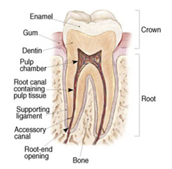
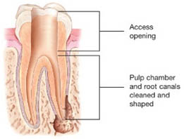
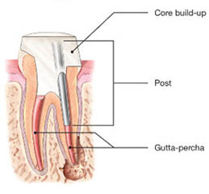
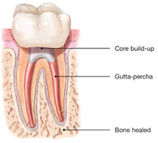
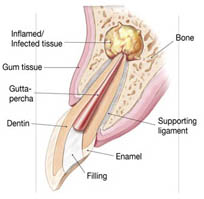
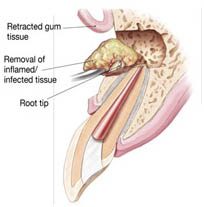
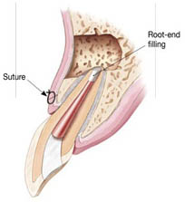

The thought of a root canal may make you fearful or uneasy if you aren’t familiar with the procedure. There are common misconceptions that endodontic treatments such as root canals, cause pain and should be avoided at all costs. The exact opposite is true.
The longer you postpone treatment the more you risk the chance to save your tooth. Take the time to read the information below to find out what endodontist in AECS Layout do to save teeth with minimal time and discomfort. Then you could address any remaining concerns or questions with your dentist or endodontist.
At our state-of-the-art dental clinic, we specialize in providing expert root canal treatment in AECS Layout to help you preserve your natural teeth and maintain optimal oral health. Our team of experienced Root Canal Specialist in AECS Layout is dedicated to delivering painless, effective, and precise root canal procedures in a comfortable and welcoming environment.

To understand endodontic treatment, it helps to know in brief about the anatomy of the tooth. Inside the tooth, under the white enamel and the brown layer called the dentin, is a soft tissue called the pulp. The pulp contains blood vessels, nerves and connective tissue and creates the surrounding hard tissues of the tooth during development.



While all endodontists are dentists, less than three percent of dentists are endodontists.
Endodontists complete an additional three years of training (MDS in Endodontics) after graduation (BDS) to be qualified to practice and also teach endodontics. Their additional training focuses on diagnosing tooth pain and performing root canal treatment and other procedures relating to the interior of the tooth.
Endodontists are specialists in saving teeth, committed to helping you maintain your natural smile for a lifetime. Their advanced training, specialized techniques, and superior technologies mean you get the highest quality care with the best result — saving your natural teeth!
Root canal treatment is necessary when the pulp, becomes inflamed or infected. There are a whole host of reasons why you might need root canal treatment:
Signs to look for include pain, prolonged sensitivity to heat or cold, tenderness to touch and chewing, discoloration of the tooth, and tenderness in the lymph nodes as well as nearby bone and gum tissues. Sometimes, however, there are no symptoms.
Decades ago that may have been the case, but with modern technology and anaesthetics most patients are absolutely comfortable during the procedure.
Root canal treatment is virtually painless and patients who experience root canals are six times more likely to describe it as painless than patients who have a tooth extracted.
Mild discomfort is expected in the treated tooth for about 2 -3 days. The endodontist will prescribe medication which should be taken without fail.
You can brush normally over the root canal treated tooth.
You are instructed not to chew or bite on the treated tooth until you have had it restored by your dentist. Normally after a root canal, we wait for about 7-10 days to make sure the tooth is comfortable. After this period, a cap (crown) is put. Failure to put a cap can increase the chances of tooth fracture.
Endodontic treatment has a high success rate of about 96% and many root canal-treated teeth last a lifetime.
The cost varies depending on how complex the problem is and which tooth is affected. Molars are more difficult to treat; the fee is usually more.
Generally, endodontic treatment of the natural tooth is less expensive than the alternative of having the tooth extracted and replaced. An extracted tooth must be replaced with an implant or bridge to restore chewing function and prevent adjacent teeth from shifting. These procedures tend to cost more than endodontic treatment.
Sometimes you may think, why not have a tooth pulled, especially if no one can see it. But you will know your tooth is missing and it will negatively impact your quality of life. Missing teeth can cause other teeth to shift, affect your ability to properly chew and ruin your smile. Replacing an extracted tooth with a bridge or implant requires additional dental visits and cost and may result in invasive procedures to neighbouring teeth.
Nothing looks, feels or functions like your natural tooth. Saving your natural teeth, if possible, is always the best option. Nothing artificial can replace the look or function of a natural tooth so it’s important to always consider root canal treatment as an option.
Most endodontically treated teeth last as long as other natural teeth. In a few cases, a tooth that has undergone endodontic treatment does not heal or the pain continues. Occasionally, the tooth may become painful or diseased months or even years after successful treatment. Often when this occurs, redoing the endodontic procedure can save the tooth.
If for some reason, an infection persists at the root tip in spite of conventional root canal treatment, it may be necessary to clean out the infected root tip surgically to remove all the infection.


